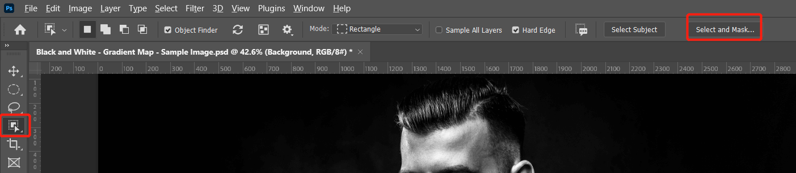
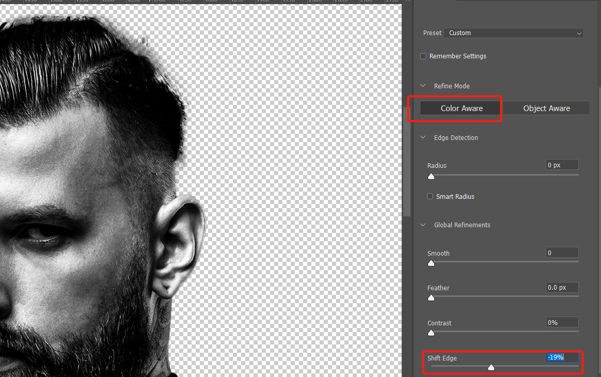
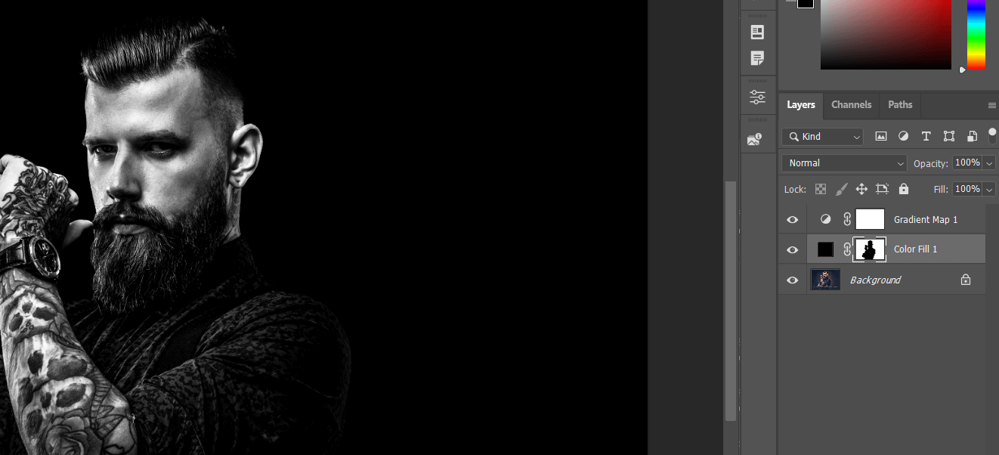
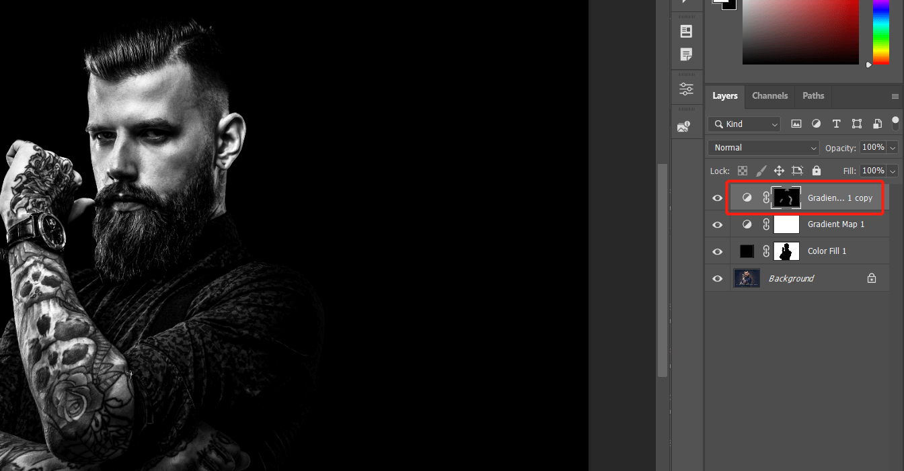

PHP频率分离处理皮肤 in Photoshop

频率分离在处理人像或需要平滑表面的地方非常有效，在之前的教程中介绍过频率分离的方法，下面介绍在实际应用中，在频率分离后如何进行下一步处理。
Photoshop 皮肤处理进阶
通过频率分离修复褶皱衣服 in Photoshop
频率分离 action：PiX - Frequency Separation.atn
PHP 表示：patching修补，healing修复，polishing抛光
频率分离在处理人像或需要平滑表面的地方非常有效，在之前的教程中介绍过频率分离的方法，下面介绍在实际应用中，在频率分离后如何进行下一步处理。
Photoshop 皮肤处理进阶
通过频率分离修复褶皱衣服 in Photoshop
频率分离 action：PiX - Frequency Separation.atn
PHP 表示：patching修补，healing修复，polishing抛光
之前介绍过通过高低频率分离可以处理皮肤柔化，它可以方便的单独处理颜色和反差部分。下面介绍通过高低频分离将褶皱的衣服平顺化，同时保持其原有的真实过渡部分。
用到的技术主要有：高斯模糊、apply image、linear light、mixer brush tool、patch tool
黑白图片在某些场景下有其独特的风格，在人像摄影中可以体现出一种另类的雕塑感，下面通过实例介绍如何从一个彩色图片处理为一张黑白效果。使用的工具主要是 gradient map 和 camera raw。
下面是原始图片：
首先在原图上方建立 gradient map 图层，gradient map 的作用是根据图像的亮度分布进行颜色替换：
首先将下方的 method 改为 classic，这样过渡效果更加平顺一些：
默认是一个反色效果渐变，点击渐变条，修改其属性为左边黑色右边白色：
下面我们增加黑白色差效果，调节左侧下方滑块可以使得黑色区域更黑，调节右侧下方滑块可以使得白色区域更白，调节中间滑块可以调节黑白区域范围：
调节到合适效果后确认即可，这样我们初步就有了一个效果。
下面为了让背景更加黑，我们通过选取提取出背景，创建一个纯黑背景。选中图像图层，选区工具下选中 select and mask：

点击 select subject 可以自动选中主体：
点击 color aware 和 shift edge 调节选区边沿：

确认后可以获取到主体的选取，创建一个 solid color 黑色图层，选中蒙版，ctrl I 反转选区即可：

放大我们可以发现主体边沿和背景没有完美的融合，这时可以通过复制刚才的 gradient map 图层强化黑白效果，然后通过笔刷工具将复制的图层只保留主体边沿部分，注意使用笔刷的时候不透明度调节稍微低一些：

基本效果已经可以了，下面调节细节部分，首先眼睛需要提亮，新建 curves 图层，提亮曲线后反转蒙版，使用笔刷工具涂抹出眼睛的亮度：
黑白图片效果一般在提高锐度的时候会更加具有特点，下面我们通过 camera raw 来做调整。
首先快捷键 ctrl shift alt E 盖印图层，然后转换为 smart object 方便后期返回来调整参数：
然后点击 filter - camera raw filter 进入编辑模式。
为了更加强烈的反差，我首先调节了亮度参数：
然后就是锐化的重点 - 提高 clarity 清晰度参数，注意不要调的过高而失真：
完成后保存返回 Photoshop，适当调节不透明度使图片更加自然：
最终效果如下：
phpMyAdmin 是一个 php 的免费工具，用来在 web 端管理 MySQL 数据库。它支持大部分的 MySQL 功能，比如：创建数据库，修改数据，管理用户权限，导入导出数据等。
官方网站：https://www.phpmyadmin.net/
GitHub 主页：https://github.com/phpmyadmin/phpmyadmin
下面介绍在 Ubuntu 20.04 的安装及使用过程。
之前介绍了通过 gdrive 在服务器上管理 Google drive 文件，实现服务器数据备份自动上传功能。最近发现有一个新的开源项目 rclone 支持更多的网盘，同时更新迭代速度也更快。
GitHub 主页：https://github.com/rclone/rclone
他支持的网盘列表：https://rclone.org/overview/
下面介绍它的安装使用方法。